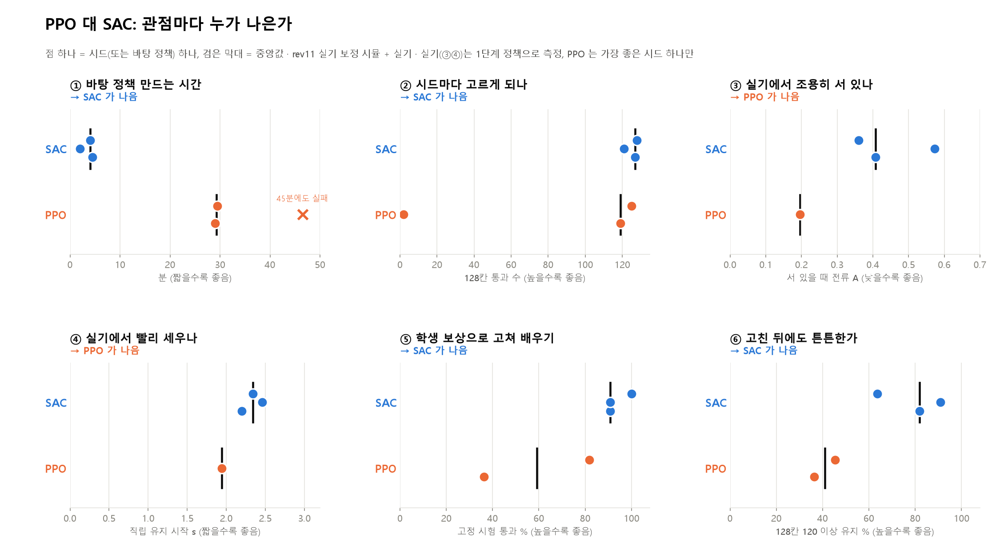
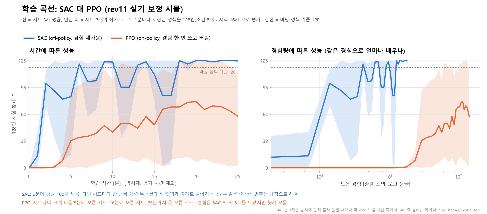
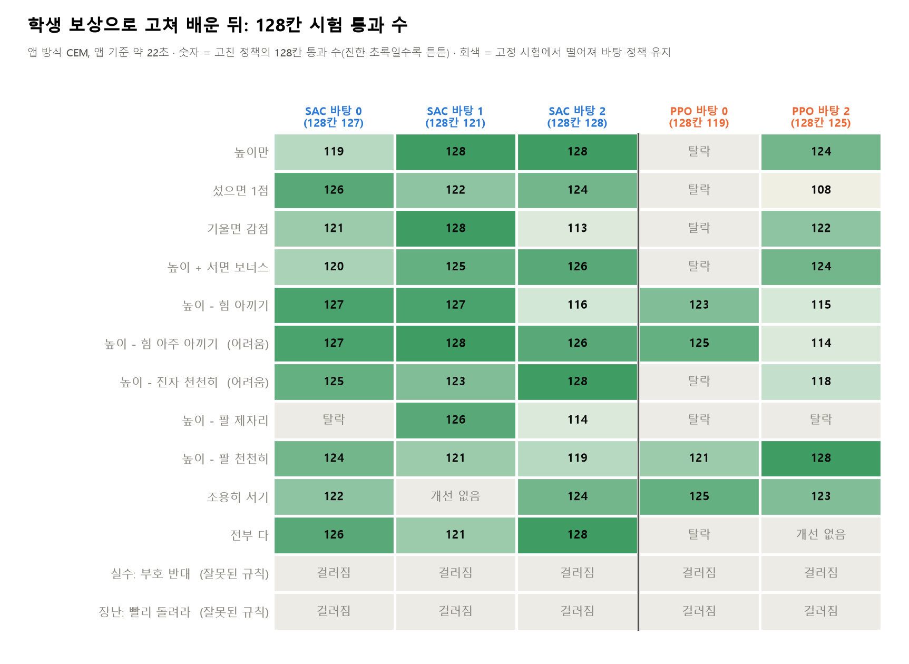
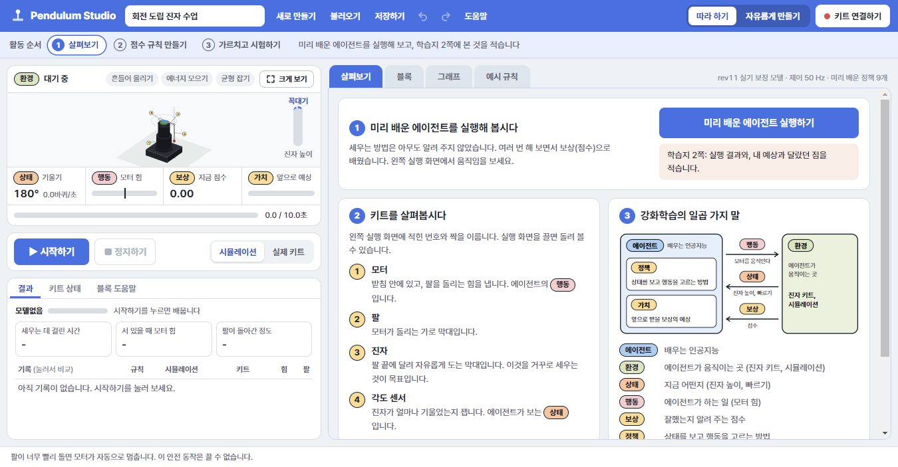
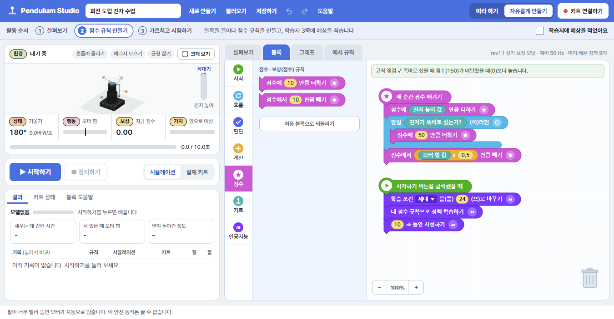
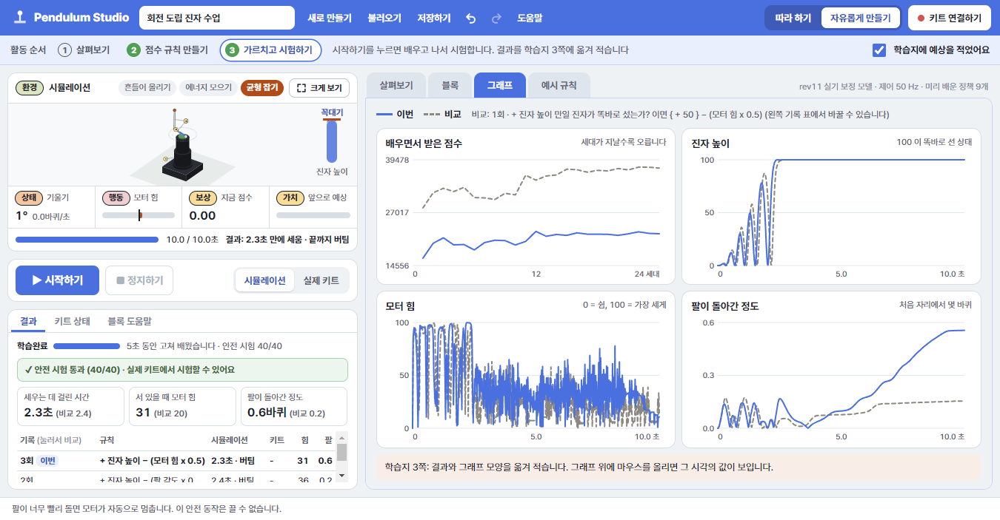
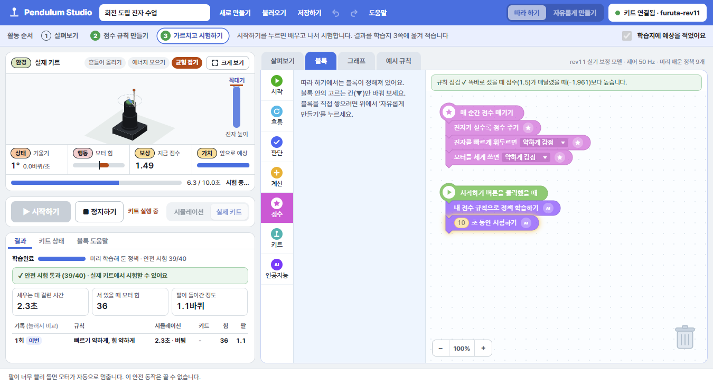
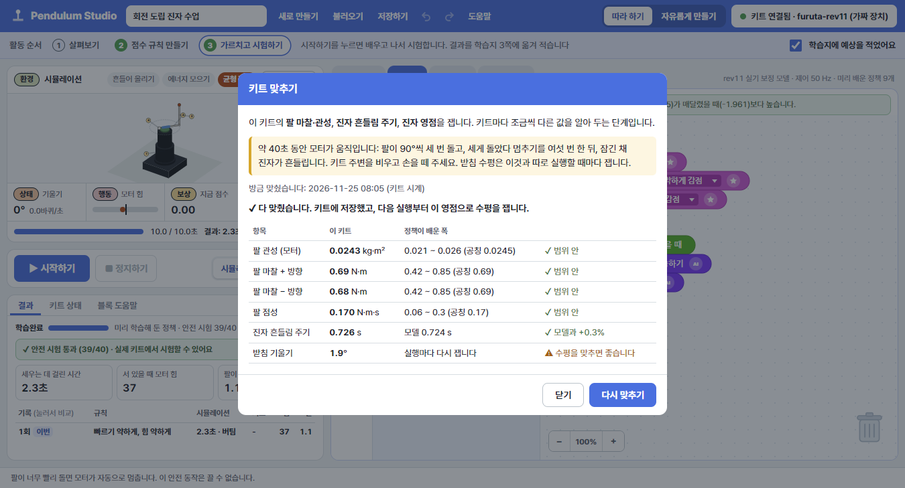

| 쪽 | 내용 |
|---|---|
| 2 | 무엇을 정하려 했나: 수업 흐름과 알고리즘에 바라는 것, PPO·SAC 한 장 설명 |
| 3 | 어떻게 공정하게 비교했나, 그리고 남아 있는 불공정 |
| 4 | 결과: 관점마다 누가 나은가 (그래프) |
| 5 | 우리가 고민했던 질문들과 답 (왜 결과가 좋은 PPO가 아니라 SAC인가, 왜 앱은 CEM인가) |
| 6 | 학생 보상으로 고쳐 배우기 시험, 실기 확인과 교훈 |
| 7~8 | 앱(Pendulum Studio) 화면: 이 결정이 앱에서 어떻게 보이는가 |
| 9 | 남은 일, 파일 위치와 재현 방법 |
rev11 실기 키트(MyActuator RMD-X6 모터, AS5600 진자 엔코더, Raspberry Pi 5)와, 그 실기 측정값으로 보정한 MuJoCo 시뮬레이션. 모든 수치는 2026-11-24 측정.
원본 자료는 s2r/PPO_vs_SAC_발표자료.md, 그래프는 s2r/figures/.
| 바라는 것 | 왜 |
|---|---|
| 바탕 정책을 빨리, 확실하게 만든다 | 키트나 물리 모델이 바뀔 때마다(예: 이번 rev22 진자) 다시 만들어야 한다 |
| 학생 규칙으로 고쳐도 무너지지 않는다 | 수업 중 학생이 기다릴 수 있는 시간은 1분 안쪽이다 |
| 실제 키트에서 조용하고 확실하게 선다 | 교구는 발열·소음·안전이 중요하다 |
세 가지가 한 알고리즘에서 동시에 최고가 아니었다. 그래서 "무엇을 더 중요하게 볼 것인가"가 고민의 핵심이었다.
| PPO (Proximal Policy Optimization) | SAC (Soft Actor-Critic) | |
|---|---|---|
| 비유 | 문제집을 한 번 풀고 버린 뒤 새 문제집을 푼다 | 푼 문제를 오답노트에 모아 두고 계속 다시 푼다 |
| 데이터 | 방금 모은 경험으로만 배우고 버린다 (on-policy) | 경험을 저장해 여러 번 다시 쓴다 (off-policy, 리플레이 버퍼) |
| 장점 | 한 번에 조금씩만 바꿔 안정적, 구조가 단순 | 같은 경험으로 많이 배워서 빠르다 |
| 단점 | 경험이 많이 필요, 탐색을 운에 맡기는 편 | 학습 중 잠깐 무너지는 일이 있다, 계산이 무겁다 |
| 탐색 | 행동에 정해진 크기의 잡음을 섞는다 | "다양하게 행동할수록 보너스"를 보상에 더한다 (엔트로피 최대화) |
각 알고리즘이 잘 돌아가는 표준 방식을 그대로 썼다. 억지로 같게 맞추면 오히려 한쪽이 불리해진다.
| SAC | PPO | |
|---|---|---|
| 동시에 돌리는 환경 수 | 8개 | 24개 |
| 초당 모으는 경험 | 약 1,200 스텝 | 약 8,000~11,000 스텝 |
| 신경망 활성화 함수 | ReLU | tanh |
| 항목 | 내용 |
|---|---|
| 조율 | SAC는 학습률 하나를 조율했고(효과 약 1.5배), PPO는 설정 4가지를 시험했지만 기본값보다 나은 것을 찾지 못했다. 조율 차이로 설명되는 건 1.5배 정도이고, 학습 시간 차이는 약 7배다. |
| 실기 시험 수 | PPO는 가장 좋은 시드 1개만 실기에 올렸다(SAC는 3개). PPO 실기 수치는 성공한 시드 하나의 값이다. |
| 다른 환경에서는 반대 | 조원 B의 환경·구현에서는 PPO가 11~13분에 성공했고 SAC는 25분 안에 실패했다. "SAC가 항상 빠르다"고 일반화하면 안 된다. 이 결론은 우리 rev11 환경·구현에서의 결과다. |
| 관점 | SAC (시드 3개) | PPO | 나은 쪽 |
|---|---|---|---|
| ① 바탕 정책 만드는 시간 | 2.0 · 4.0 · 4.5분 | 29.0 · 29.5분, 1개는 45분에도 실패 | SAC (약 7배) |
| ② 시드마다 고르게 되나 (128칸) | 127 · 121 · 128 | 119 · 125 · 2 | SAC |
| ③ 실기에서 서 있을 때 전류 | 0.36 · 0.41 · 0.57 A | 0.20 A | PPO (절반 이하) |
| ④ 실기에서 세우기 시작한 시각 | 2.20 · 2.34 · 2.46초 | 1.94초 | PPO (조금) |
| 실기 엄격 통과 | 15/15 | 5/5 | 같음 |
| ⑤ 학생 보상으로 고쳐 배우기 성공 | 31/33 (94%) | 13/22 (59%) | SAC |
| ⑥ 고친 뒤에도 128칸 120 이상 | 26/33 (79%) | 9/22 (41%) | SAC |
| 잘못된 규칙 걸러내기 | 6/6 | 4/4 | 같음 (둘 다 안전) |


"결과"도 항목을 나눠 보면 PPO가 이긴 건 실기에서 서 있을 때 전류(③)와 세우기 시작 시각(④)뿐이다. 그마저 성공한 PPO 시드 하나의 값이다(실패한 시드는 실기에 올릴 수도 없었다). CEM 고쳐 배우기는 어떤 알고리즘이 만든 정책이든 신경망 숫자를 조금씩 흔들며 점수 좋은 쪽으로 옮기는 방법이라, 바탕 정책에 필요한 건 "가장 잘 서는 것"이 아니라 다음 세 가지다.
| 바탕 정책에 필요한 것 | 측정 결과 |
|---|---|
| 흔들어도 안 무너질 것 | 같은 CEM 설정·같은 보상 13개·같은 계산량으로 직접 시험: 고쳐 배우기 성공 SAC 94% 대 PPO 59%. 결정의 직접 근거. |
| 다시 만들기 쉬울 것 | 키트가 바뀌면 바탕을 다시 학습해야 한다. SAC 2~4.5분 vs PPO 30분 이상. |
| 좋은 바탕이 매번 나올 것 | SAC 시드 3/3 성공. PPO 바탕 2번은 SAC만큼 잘 고쳐졌지만(11개 중 9개), 그런 바탕이 나오는지가 시드 운에 달렸다. PPO 바탕 0번은 고정 시험 30/32(합격선 그대로)라 조금만 바뀌어도 탈락했다. |
해석(측정 아님): SAC는 "다양하게 행동할수록 보너스"를 받으며 배워서 여러 상태를 겪고, 조금 어긋나도 회복하는 넓은 정책이 된다. PPO는 한 가지 매끄러운 동작으로 좁게 수렴해서, 조용한 대신 숫자를 조금만 건드려도 성능이 떨어지기 쉽다. SAC의 전류가 큰 것도 같은 성질의 대가로 추정한다.
조용함을 SAC에서 얻으려고 학생 규칙에 "힘 아끼기"를 넣어 보니 시뮬에서는 전류가 0.44 → 0.25 A로 줄었지만, 실기에서는 그대로 나오지 않았다(6쪽). 아직 남은 약점이다.

| 장치 | 내용 |
|---|---|
| 고쳐 배우기 | 처음부터가 아니라 바탕 정책에서 출발. 시험 당시 앱 기준 약 22초(지금 앱은 예시 규칙당 약 9초). |
| 조건 섞기 | 시작 자세 5개를 서로 다른 조건 5개(공칭, 마찰 큼·작음, 토크 약함+지연, 결합 약함)와 짝지어 점수를 냄. 계산량은 같다. 공칭 하나만 쓰면 128칸 120 이상 유지가 11개 중 2개, 섞으면 7개. |
| 고정 시험 | 학생 점수와 상관없는 같은 시험을 통과한 후보만 고름. 통과 후보가 없으면 바탕 정책을 그대로 씀. 잘못된 규칙(부호 반대, 빨리 돌리기)은 모든 바탕에서 걸러졌다. |
| 정책 | 엄격 통과 | 서 있을 때 전류 | 팔이 돈 거리 | 시뮬 예상 | 실기 결과 |
|---|---|---|---|---|---|
| 바탕 (고치기 전) | 3/3 | 0.40 A | 9.6~15.1 rad | 기준 | 기준 |
| 팔 제자리 | 3/3 | 0.24 A | 0.1~0.3 rad | 팔 이동 3.8 → 1.0 rad | 의도대로, 시뮬보다 더 잘 됨 |
| 서면 보너스 | 3/3 | 0.31 A | 2.2~2.8 rad | 전류 0.42 → 0.19 A | 전류 조금 줄고 팔 이동 크게 줄어듦 |
| 조용히 서기 | 3/3 | 0.47 A | 12.0~13.3 rad | 전류 0.42 → 0.14 A | 전류가 오히려 늘어남 |
| 힘 아주 아끼기 | 0/3 | 0.76 A | 46 rad | 전류 0.42 → 0.18 A | 실패: 직립을 지나쳐 계속 돔 |
앱 이름은 Pendulum Studio. 학생에게 익숙한 엔트리 모양 블록으로 보상을 만들고, 앱 안의 시뮬레이션(rev11 실기 보정 물리)에서 고쳐 배운 뒤, 키트에 연결해 실기로 돌린다. 화면은 2026-11-24~25 캡처.





app/src/js/learn.js)| 항목 | 값 |
|---|---|
| CEM 기본값 | 24세대 × 한 세대 후보 20개, 상위 1/4을 평균해 다음 세대로, 바꾸는 크기 σ = 0.06 (세대마다 줄어듦). 학생이 블록으로 바꿀 수 있음 |
| 조건 섞기 | 시작 자세 5개 × 조건 5개(공칭, 마찰 큼, 마찰 작음, 토크 약함+지연, 결합 약함)를 하나씩 짝지음 |
| 안전 시험 | 40칸(조건 8개 × 시작 5개, '완전히 매달려 멈춘 상태' 포함). 후보 넷 중 37칸 이상 통과한 것에서 점수 최고를 고름. 없으면 바탕 정책 유지 |
| 할 일 | 내용 |
|---|---|
| '힘 아주 아끼기' 실기 실패 원인 | 시뮬과 실기의 차이를 찾아 고정 시험에 반영 |
| 키트 쪽 안전 장치 추가 | 진자가 2초 넘게 계속 돌면 정지(지금은 진자 25 rad/s, 팔 1,100 dps에서만 정지), 못 세우면 바탕으로 되돌리기 |
| SAC 전류 줄이기 | 바탕 정책 묶음에 조용한 정책 추가, 또는 잘 고쳐지는 PPO 바탕 2번을 두 번째 바탕으로 같이 두는 방안 검토 |
| 새 진자(rev22) 반영 | 출력 진자 + M6 볼로 바뀜. 주기는 0.70 s로 맞췄지만 볼 무게를 실측한 뒤 키트 맞추기로 확인. 범위를 벗어나면 SAC 바탕을 다시 학습(몇 분) |
| 느린 노트북에서 시간 재기 | 앱 학습 시간은 개발 PC 기준 |
| 무엇 | 어디 |
|---|---|
| 비교 원본 정리 (이 문서의 근거) | s2r/PPO_vs_SAC_발표자료.md, 그래프 s2r/figures/, 숫자 s2r/summary_numbers.json |
| 환경 · 시험 · 학생 보상 | s2r/s2r_env.py, s2r/evaluate.py, s2r/student_rewards.py |
| 바탕 정책 | s2r/policies/base_sac_s*.npz, 앱용 s2r/runs_app_rules/ |
| 앱 | app/src/ (학습 learn.js, 물리 physics.js), 키트 대기 프로그램 app/kit/, 통신 규약 app/PROTOCOL.md |
| 단계 | 명령 | 결과 |
|---|---|---|
| 시뮬 예선 (25분 × 6) | python s2r/stage1.py --plan | runs_stage1/ |
| 실기 본선 (Pi에서) | pi_host/run_stage2.sh | stage2/logs/ |
| SAC 바탕 (멈춤 규칙) | python s2r/stage4_train.py --plan --dus 0 | runs_stage4/ |
| PPO 바탕 (이어 학습) | python s2r/base_train.py --cfg ppo_a --seed 2 --resume runs_stage1/ppo_s2_final.zip --subproc --tag cont | runs_base/ |
| 학생 보상 고쳐 배우기 | python s2r/cem_finetune.py --base policies/base_sac_s0.npz ... | runs_reward/ |
| 정리 그래프 | python s2r/plot_summary.py | figures/summary_*.png |
실기를 움직이는 명령은 반드시 키트 옆에 사람이 있을 때만, Pi의 CAN 버스는 한 프로세스에서만 쓴다(조원 A의 Pi CLAUDE.md 규칙).